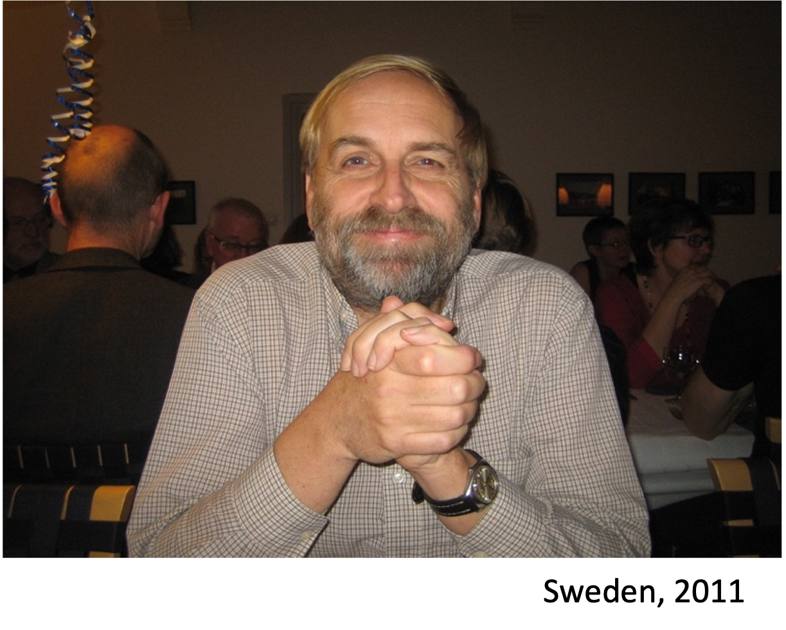
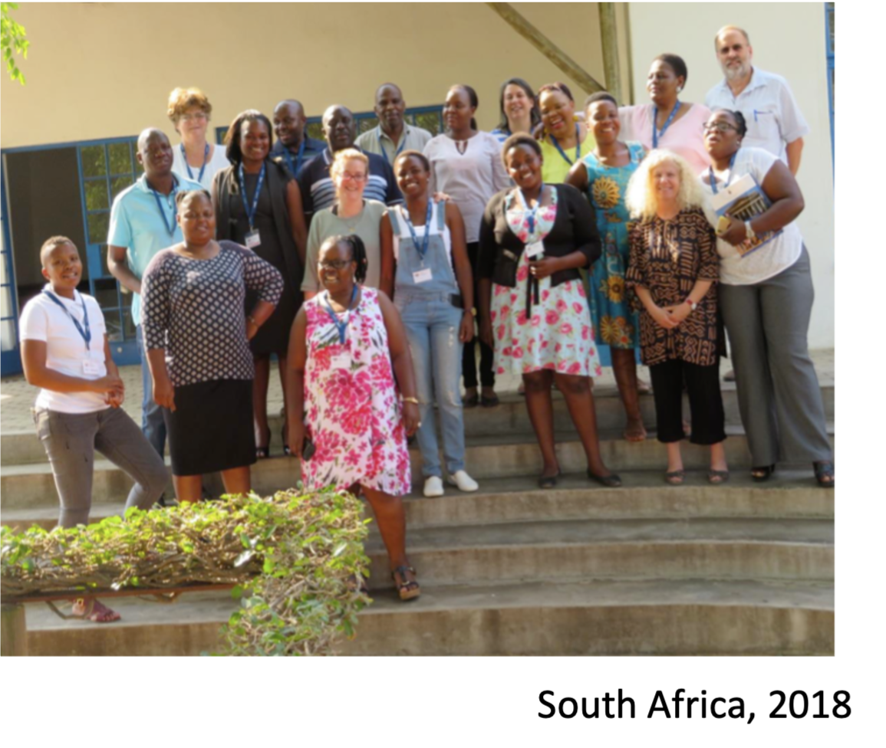
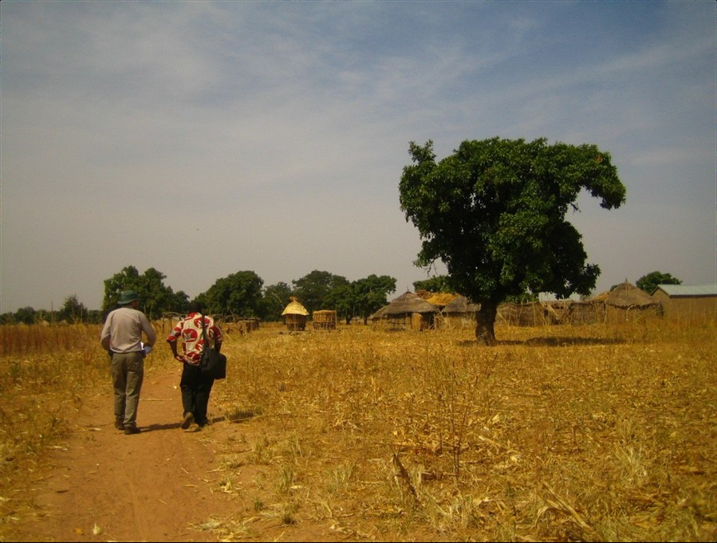

News · August 2020
In memory of Professor Peter Byass
In memory of Peter Byass, co-principal investigator on VAPAR.
It is with great sadness we learned that Professor Peter Byass, a close friend, colleague and co-principal investigator on VAPAR, died suddenly at his home in the UK on 16th August. We had a long-standing collaboration with Peter. Here we share some memories and reflections.
Our collaboration: the ‘how’ and ‘why’ of unrecorded deaths
As Professor of Global Health at Umeå University, Sweden, Honorary Professor at the University of the Witwatersrand in Johannesburg, and at the University of Aberdeen, Scotland, Peter made long-standing contributions internationally to building health information systems and capacity through health and sociodemographic surveillance systems (HDSS) processes and infrastructure.

Embedded in HDSS settings in the INDEPTH Network, an international network of HDSSs, we collaborated from the early 2000s to extend verbal autopsy (VA) to complement data on biomedical causes with information on ‘social causes of death’. This work combined data on how deaths occur (in terms of biomedical processes) with indications of why they happened (in terms of circumstantial drivers and root causes), combining numbers representing burden of disease with information on the human experience of that burden. The work culminated in an extension to the international VA standard to routinely collect information on critical limiting circumstances and events at and around the time of death.
An enduring collaboration: extending the reach of research
We continued the collaboration and extended ideas about how to further extend and, critically, use information on bio-social causes of death in new partnerships in South Africa with Mpumalanga Department of Health. With a founding member of the INDEPTH Network, the MRC/Wits Agincourt HDSS, we have built multi-sectoral collaborations between government and non-government agencies, researchers and rural communities to co-produce evidence (statistical and qualitative) on local health concerns, and act on these data in cooperative, multi-agency partnerships. This has been a major contribution to realising the potential of the method outside research settings, in policy, planning and practice.

Peter had a profound influence on the research programme advanced in VAPAR, which has included the training of many international postgraduates, myself included, who have gone on to build their own careers in HDSS and elsewhere. As my PhD supervisor, Peter taught me not only the importance of combining different methodological perspectives, but also that good science is working collaboratively and inclusively, with decency and integrity. We are deeply privileged to have worked with Peter; he was internationally renowned for his work measuring global burden of disease and was a strong advocate of cooperation in science. Peter was a mentor and colleague to so many of us in the global health community, a true gentleman, dear friend, and brilliant scholar.
Our deepest condolences to his family.
Lucia D’Ambruoso, VAPAR PI · August 2020
Postscript: obituaries dedicated to Peter have since been published in The Lancet and The BMJ.
